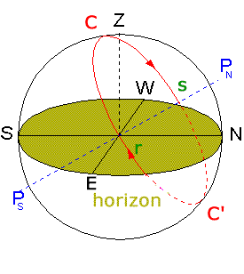
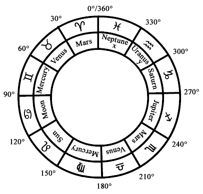

©
Paul
Allen, 11 October 2002
Franz
Bardon Research (English)
Franz
Bardon Forschung (deutsch)
Dedication: to Pier Paolo Pasolini: "Medea".
Contents:
I.
Commentary on BN's: "Symbolism and Kabbalah".II.
Commentary on BN's: "The holy Trinity".III.
Commentary on BN's: "Papermagnets".IV.
Commentary on BN's: "Talismanic Theomagic".V.
Commentary on BN's: "Invocation of the Genii".VI.
Commentary on BN's: "Results of experiments".VII.
Commentary on BN's: "Magical long-distance effects".
Summary, evaluation and interpretation.
---
Addition.
Introduction
In the following I'm describing a system to "work" with the so-called "Genii" of the Mercury sphere. These beings are known in the original Hebrew Kabbalah as the 72 Genii or "Names of God" or as the 72 lettered Name of God. The system, which I am about to describe was created by Franz Buchmann-Naga and was published by him under the name "Schlüssel zu den 72 Gottesnamen der Kabbalah" (= "Key to the 72 Names of God of the Kabbalah").
My commentary on this text with further explanations and the addition of other sources should serve mainly as information, to which I will return to in upcoming articles elucidating certain principles and concepts.
The below presented details may also be a source for occultists and they can use the data for their personal work, even though this aspect of my article is not intended by me. Bardon repeatedly warns practitioners, not to begin such work before they have mastered Step Eight of IIH, otherwise they will be liable to many delusions and dangers. It is up to every single practitioner to observe those suggestions. Every person, who doesn't care at all and dismisses all warnings must then bear in the end the often very unpleasant consequences. E.g. one could wake up suddenly in the mental-asylum, surrounded by translucent apparitions and heavily drugged to calm down panic attacks. For example Professor Staudenmaier had to be admitted two times to the mental hospital, to get psychiatric treatment and medication, because the apparitions and hallucinations he experienced, were about to overthrow him. The physicians diagnosed severe Schizophrenia or something similar. He was a completely sane and "ordinary" person when he began his experiments. [Ludwig Staudenmaier (1865-1933) = a researcher of "occult" phenomena, my next article will report his very important findings.]
This article contains a number of interesting considerations regarding Bardon's work, for example why the 72 Genii of the Kabbalah could be attributed just to the Mercury sphere, and similar concepts. Buchmann-Naga's research is an interesting example of Europe's occult tradition at the beginning of 20th century, a tradition which was also a source for Bardon's system.
[I'm labeling my commentary to each paragraph of the original text by Buchmann-Naga (which is not included in this article) with the number of the specific chapter and paragraph. For example "IV 21" means a commentary to paragraph 21 of chapter four of the original book. Some abstract concepts were quite difficult to translate into English, and I'm not sure if I have always been able to convey the correct meaning of BN's elaboration. I'm using the term "Genius" and "Genii" to denominate such concepts as "angelic beings"; I hope that this will be not too confusing for English readers.]
Note:This is not the promised article mentioned in my article the Tesla level. This will follow shortly (~ 4-6 weeks).
Note2: An updated version of this article will be available soon. It will contain also the correct translation of the Latin texts.
Acknowledgment: I would like to thank Mr. PaulM who was of great assistance in the quite difficult English translation of this article. PaulM was the person who discovered Bardon's "quantity keys" (Names of God) on Kircher's diagram, a very important finding.
Commentary on BN's:
I.) Symbolism and Kabbalah
In this first chapter (34 paragraphs) Buchmann-Naga (= BN) introduces the reader to the Kabbalah in general. This chapter contains the usual explanations about the Kabbalah and presents basically nothing new or interesting for us. You can find this type of introduction in any standard book on the Kabbalah. I will nevertheless add here some commentaries to prepare the reader for the chapters and sections which follow.
I-4: BN rightfully points out to the reader, that one must study the Kabbalah diligently "at least for 50-60 years", before one could hope to penetrate deeper into this subject. I would like to add (with regard to BN's concept of Kabbalism), that one must be able of course to read and speak the Hebrew language, so that one can study the manuscripts, writings and standard works of the original Hebrew Kabbalah, if someone wants to become a real Kabbalist.
I-6
BN specifies Papus "The Kabbalah" as an important source for his work.I-8/9
The Hebrew letters would embody the history of creation, every letter being a hieroglyphical entity, combining Gods Trinity, the 12 zodiacal signs and the seven planets to a total of 22 letters: 3+12+7=22. This is in fact the famous basic system as outlined in the Sepher Yetzirah and other kabbalistic standard texts. But the Kabbalists used not only those fundamental 22 but 27 letters, a fact which Bardon absolutely takes into account basing his system on 27 letters. BN overlooks like many not-Jewish people the so called "final-letters" which are used at the end of a Hebrew word. This piece of information would have been easily obtainable, for example in Agrippa's "De Occulta Philosophia" and many other sources:
27 Hebrew letters.
"Aiq Beker" - arrangement
(Source: Agrippa: "De Occulta Philosophia", Book III, chapter 30)
(Numbers by PA)
I.) Simple letters with the numerical values 1-9: Aleph (1), Beth(2), Gimel(3), Daleth(4), He(5), Vau(6), Zayin(7), Cheth(8), Teth(9). They represent the mental plane with 9 orders of angelic powers (Agrippa).
II.) Letters with the numerical values 10-90: Yod(10), Kaph(20), Lamed(30), Mem(40), Nun(50), Samekh(60), Ayin(70), Pe(80), Tzaddi(90). They represent the "heavenly things within the 9 spheres of heaven" (Agrippa).
III.) Letters with numerical value 100-900: Qoph(100), Resh(200), Shin(300), Tau(400), Kaph-final(500), Mem-final(600), Nun-final(700), PE-final(800), Tzaddi-final(900). They represent the lower things: the four elements and "5 species of composed things" (Agrippa).
---Now the corresponding illustration by Athanasius Kircher:
27 Hebrew letters.
Source: Athanasius Kircher, Oedipus aegyptiacus (1652),
Section: CLASSIS IV - CABALA HEBRAEORUM
Page 229
Athanasius Kircher gives the following explanation:
"Vides quomodo per novem monades simplicissimas intellectualis Mundus nobis proponatur; & quomodo in secundo ordine per novem decades, sensibilis sive Siderei Mundi forma eluceat; & quomodo tandem per novem hecatontades elementaris & totius corruptionis Mundu indicetur; ita ut res quanto plus a monade recesserint, tanto ob multitdinis confusionem imperfectiones reddantur. Atque haec est triplex illa Enneadum trinitas tantopere non ab Aegyptijs tantum, & Chaldaeis, sed & Pythagoricis, & Platonicis commendata, uti in Arithmetica hieroglyphica videbitur; cuius radix ternarius; quadratus, novenarius; cubus Heptaicosias est per 27 numeru indicata, innumeris arcanis repleta, totius & singulorum in eo contentorum idea absolutissima; ... "
There exist also other attributions in the original Hebrew Kabbalah. In his commentary to the Bahir Kaplan states that "In the Kabbalah, the following parallels are found":
Chakhmah-Wisdom Thousands Bina-Understandig Hundreds The Next Six Sefirot Tens Malkhut-Kingship Units The order is here reversed in comparison to Kircher's and Agrippa's attribution of numbers.
Furthermore we must say, that the "Trinity" is a central concept of Christianity, and has not much in common with the original Hebrew Kabbalah. The famous Hebrew Kabbalist and mystic Rabbi Abraham Abulafia (*1249, disappears 1288) even derides the Christian concept of Trinity, and gives a number of examples about the obvious (to him) wrong "Trinity"-concept.
Of course there are also many elements in the original Hebrew Kabbalah which correspond to the number three, especially the three "mothers" aleph, mem, shin, see Sepher Yetzirah, the Bahir, the Zohar, book Raziel, but they are used in a completely different way as in Christianity.
Therefore I must emphasis the fact, that BN's system is based on the tradition of the "western Kabbalah", which evolved in the Renaissance from Hebrew mysticism in Christian circles, but is related to the "original" true Hebrew Kabbalah in only a loose way. Sometimes these two systems are even based on contrary concepts. I would suggest, that practitioners of the "western kabbalistic tradition" should use a different name for their system, to underline the very different nature of the two systems. To call their system "Kabbalah" is in fact an insult for every true Hebrew mystic, one should take this into account and use another name.
With this I'm saying nothing about the quality of the two systems. I even argue, that some of the concepts of the "western tradition" make more sense when it comes to the system's practical application.
Furthermore we should notice, that Bardon claims, that his kabbalistic system is not based on the Hebrew Kabbalah, but is based on "Universal Truth", of which all other system in the east and west are only variants -- no single system lays out the "Truth" in such a clear and precise manner like his system.
I-23
BN claims in this paragraph quite impertinently, that the "real" and "true" Kabbalah is the Christian Kabbalah ! Because the true Hebrew Kabbalists converted to Christianity !!! BN: "... because even with some of the Kabbalists there were certain masters, who had been outlawed and persecuted and who converted eventually to Christianity."I suppose, that no comment about the quality of this statement is necessary ! The reason why Jewish Europeans had to convert to Christianity in these dark ages was the consequence of the resentment and persecution by Catholicism and Catholic sovereigns, and not vice versa. Not even a single one of the major Hebrew Kabbalists ever converted to Christianity. Abraham Abulafia for example was persecuted by some of his fellow Kabbalists in a terrible manner, but I am sure he wasted not a single thought about conversion to Christianity. In his last very difficult years he made even an attempt to convert the Pope to Judaism ! The Pope ordered him to be burnt at the stake outside of Rome, but he managed to escape. That a number of Jewish Europeans, who were initiated also into the Hebrew Kabbalah had to convert to Christianity to protect their children and families in very difficult circumstances, is obvious. In these times Jewish people often had only the choice between converting or to burn at the stake.
I-24
As "Kabbalistic masters" "as Stanislas de Guaita defined them" he cites Wilhelm Postel, Reuchlin, Khunrath, Nicolas Flamel, Saint Ahantin and Fabre d'Olivet. Most of the writings of these authors were published in foreign languages (Latin, French), therefore it's most likely, that BN took these ideas out from Papus' Kabbalah, as we can guess from I-26. I would like to add that such people often base their methods only on accounts of other authors and rarely know anything about the original sources. That in this way eventual errors become spread throughout many works of many authors, is obvious.
I-29
BN was fascinated by Papus' elaboration on the 72 Names of God and was led by Papus' claim, that the "truth" is very often not found because sometimes the truth is "so obvious", to Ariadnes thread, which probably means, that he thought, that he had found the way, to "use" the 72 Names of God. "Some experiments proved that I was right" he tells us with joy, "even if I was not able to provoke the phenomena at will, because my psychic powers were not developed to the necessary degree" he remarks with a self-critical attitude.
Commentary on BN's:
II.) The holy Trinity
In the second chapter (24 paragraphs) BN elaborates on the concept of "Trinity". He gives a number of examples and correspondences of the principle of Trinity.
II 1:
"Heavenly realm, the realm on earth, the subterranean realm", "Creation, preservation, dissolution", "past, present, future",II 3: "every (all) good things are three"
II 6:
The Phythia is sitting on a three-legged stool = that means that she can predict past, present and future. BN presents here the following diagram:
II 7: The three-legged censer.
II 8: Father, Son, and Holy Ghost.
II 13:
"The three Nornes: Urd, Verdandi and Skuld, who "spin and weave the Created, the Coming into Existence and the Existing."II 14: The three Parze: Roman's Parca, Nona, Desuma; Greeks: the three Moirs: Klotho, spinning the thread of life (she is the Creator), Lachsis (she grants the lot of life), Atropos (the unavoidable death).
II 15: India, Trimurti: Brahma (Creator), Vishnu (Maintainer), Siva (Destroyer).
II 16/17 Egypt: all Sun-temples; the three-winged sun-disc of Egypt:
Egyptian three-winged sun
Coming into existence, development, dissolution. God emanates His rays: feathers, the three primary colors: blue, yellow, red, into the duality (two snakes), the illusion and returns to the source.
II 18: The numbers of the sun are 1 and 4. The priests of Egypt went from the principle of Three back to the oneness of truth, wisdom and realization: 1+3=4.
II 19: The three wise men (Magi) of the orient.
II 20: Spirit, soul, body.
II 21: This triplicity is necessary for any long distance influence, using the electric or magnetic powers or mantras. For example: connecting, the current flowing through the wire, interruption (telegraphy) (BN wrote his book ~ in the twenties.)
I won't comment on this elaboration by BN, but we should note, that according to Bardon the key to realization on all spheres and planes is based on the principle of four and not on the number three.
Commentary on BN's:
III.) Papermagnets
In the third chapter (38 paragraphs) BN reports his own research and findings, which are much more interesting than his quite dubious theoretical statements.
III 1: BN refers to a previous publication: "Neues über das siderische Pendel" (= news about the sideric pendulum) published ca. in 1918 in the "Zentralblatt für Okkultismus" (Leipzig) Leipzic, town in East-Germany), where BN wrote "extensively on the radiation of magnets".
According to BN steel-magnets can be replaced by "paper-magnets", "because they emit as symbols electric and magnetic waves to the most distant points of our earth".
III 2: When we use the 72 Names of God as talismans, then the number of the words and letters correspond to the numbers of the planets and by proper combination they would provoke the corresponding effects.
III 3: BN has found the relevant symbols by the aid of the pendulum:
III 4/5: BN claims that the diagram of a steel-magnet has an objective relation to a real steel-magnet according to the principle as specified below (III 7). If one uses the pendulum to check out the diagram it will be found that the pendulum moves to the left blue side clockwise circles, to the right red side counterclockwise circles and swings back and forth at the yellow center. (The diagram must point precisely to the cardinal north/south points.)
north


south
"paper-magnet" (=diagram of a steel-magent)
III 6: This way the idea of the "Trinity" manifests in the papermagnet.
III 7: The working principle of this pendulum-method is according to BN as follows: to all things, even if they are only of a symbolical nature, are attached "ideas" that represent the character of the corresponding real objects: coins made of pasteboard show the metal's responses, of which the real coin is made, etc.
III 9: If one puts a piece of paper with a drawing of a "Spanish fly" on it in the hand of a hypnotized person, then forms inevitably a blister, BN claims. This is indeed the case, as Milton H. Erickson's research shows and which any stage hypnotist or hypnotherapist can prove. But in order that this experiment succeeds, the hypnotized person must know beforehand, what a "real" Spanish fly will provoke on the skin of people. Therefore it remains unclear, what this phenomenon should prove in regard to BN's "papermagnets". As an additional "proof" BN adds, that a hypnotized person can experience any kind of food just by eating potato peelings; again the relation to his papermagnets remains unclear.
III 10-27: In the following BN develops an interesting theory of color, combining numerical theories with his own research done with the pendulum. From his principle of the above mentioned triplicity, which expresses the Trinity principle through the colors (blue, yellow, red), he expands to the quintuple principle by adding the composed colors green and orange between the middle and the sides of his threefold papermagnet.
This way one gets an extended papermagnet based on the quintuple principle.
"papermagnet" based on the quintuple principle; discrete colors.
Or rendered as a continuous color-spectrum:
"papermagnet" based on the quintuple principle; continuous spectrum.
To this principle of five BN attributes the quality of "harmony".
The seventh-fold principle creates violet by the combination of red and blue and by the interaction of red and blue originates violet, and through "the separation of the two types of blue namely indigo and lavender originates the "seventh principle". This description by BN's remains puzzling, I don't understand what he means here. Anyway, the 7 is not included in BN's system.
By the application of the fivefold principle on the principle of the trinity the effectiveness of a "papermagnet" becomes greatly enhanced. When the number five, which corresponds to Mercury, is combined with the principle of trinity, then "presumably the fastest and most powerful vibrations become manifest", BN continues, "Mercury was called for this reason God's fast messenger".
In Bardon's system the number eight is attributed to Mercury, and not the number five. By speculative reasoning we could notice here, that combining the number five with the number three (trinity) we get the number eight: 5+3=8.
This combination of the principle of five with the principle of trinity BN now applies to the 72 Genii or Names of God. These 72 Names are composed in the original Hebrew Kabbalah of three letters, to which either the power attribute -el or -iah is added, to create a five-lettered Name of God. Thinking in the terms of Bardon's system we could assume (speculatively), that El (power) is a representation of the electric fluid and -iah (mercy) represents the magnetic fluid, adding the two fundamental powers to the qualities of each single Genius. One further indication that this concept could be true is that the Bahir (see paragraph 8 of the Bahir and Kaplan's commentary) states, that the letter "He" at the end of a word means the feminine quality of this thing, so we could say that the Yod of -yah reflects God (represented by a single point: Yod) in his feminine aspect (represented by He at the end of the word). Additionally He represents the concept of holding. Both concepts parallel very well the concept of the magnetic fluid.
(Hebrew reads from right to left)
(Note: there exist also completely different interpretations of the two additions -El and -Yah as this one presented by Agrippa; cf. for example Aryeh Kaplan, Sepher Yetzirah; or the standard correspondences of the Sefirot and the Names of God where "El" is attributed to Chesed-Love and "Yah" to Chakmah-Wisdom.)
For the convenience of the reader I will summarize here briefly, how the 72 Genii are derived from the Holy Bible.
Exodus, chapter 14, verse 19, 20 and 21.
(Source: Agrippa: "De Occulta Philosophia", book III, chapter 25)
"Each of those verses contain exactly 72 letters. One takes the letters of the first verse in direct order, those of the second in reverse order, and those of the third verse in direct order. Thus, one begins with the first letter of the first verse, which is a Vav. Then one takes the last letter of the middle verse, which is a Heh, and finally the first letter of the third verse, which is a Vav. Combining these, one obtains the first triplet, VHV. In order to construct the second triplet, one proceeds in a similar manner. One takes the second letter, Yod, of the first verse, the second letter from the end of the middle verse, Lamed, and the second letter of the last verse, Yod. This results in the second triplet YLY. One then continues in this manner until all seventy-two triples are completed." (Aryeh Kaplan, Meditation and Kabbalah, p. 93ff)

List of the 72 Names.
(Source: Agrippa: "De Occulta Philosophia", book III, chapter 25)
Kaplan adds then a very interesting explanation about the spelling of the 72 God-names. You probably know, that there is a long-running argument over what the true spelling of the 72 Names is. See for example below: BN instead of "Jeliel" (2nd Genius) uses the Name "Julul". According to Abraham Abulafia one must use the "natural vowels" for the spelling of the 72 Names.
Kaplan writes: "This however, only provides the consonants of the Name. The vowels used when pronouncing the Name are the "natural vowel" associated with each consonant."
"Abulafia explains that the "natural vowel" is the first vowel found in the letter's own name. Thus, for example the first vowel in the name of the letter "Beth" (
, written out as
) is "e", and therefore "é" or the Tzeré (..) is the natural vowels of Beth." Kaplan then lists all "natural vowels":
Letter Alef Kametz Beth Tzeré Gimel Chirek Dalet Kametz Heh Tzeré Vav Kametz Zayin Kametz Chet Tzeré Tet Tzeré Yod Cholam Kaf Kametz Lamed Kametz Mem Tzeré Nun Shurek Samekh Kametz Ayin Kametz Peh Tzeré Tzadi Kametz Kof Cholam Resh Tzeré Shin Chirek Tav Kametz Table: natural vowels according to Abulafia
The following table compares the 72 Names as given by Bardon with those by Agrippa and Abulafia.
Please note, that Bardon's names contain serious errors: e.g. Name no 17 Lanoiah (Bardon): the corresponding triplet contains no "n", it contains Lamed, Aleph and Vau, Agrippa's "Leavjah" is right; Name no 43 "Veubiah" (Bardon) is wrong, there is no "b" in the corresponding triplet, it contains the letters Vau, Vau, Lamed; Agrippa's Vevaljah is right; and so on ..., I have marked minor differences blue and serious errors red. (Please remember that Vau translates to v, o, u; = Matres lectionis, technical term of the Hebrew grammar.)
Errors in such lists are very common. It's always a good idea to double-check every single item you are working with. For example in the above original diagram of the three Exodus verses by Agrippa there is missing letter no 13 (Yod) in the first line. Even Kaplan makes two errors when calculating the 72 Names, cf. "Meditation and Kabbalah" p 94 "THE NAME OF SEVENTY-TWO": triplet 7 is wrong, the third letter is a "he" but should be an "aleph", triplet 38: the first letter is a "He" but should be a "Chet".
If we use Kaplan's list according to Abulafia, the spelling of all 72 Names would change quite drastically; e.g.: Vehuiah to Vahevayah or Sitael to Sayoteel. Nevertheless it's my impression, that Abulafias Names are the most appropriate ones. Please note that Abulafia uses (in the text presented by Kaplan's "Meditation and Kabbalah") only the three-lettered God-names without the addition of -el and -yah.
I'm using Kaplans way of spelling the Hebrew "Yod" = Y. Furthermore I'm adopting Agrippa's way to translate "Kaf" and "Kof" into English. Kaf = c, Kof = k. Please cf. Israel Regardie's note on page 104 of "The Golden Down" on the Hebrew dialects Sephardic and Ashkenazic, the two different spelling systems. Agrippa makes no distinction between "He" and "Chet", I'm using "h" for "He" and "ch" for "chet". Furthermore I'm using like Abulafia the "E" for Ayin to distinguish it from the "Aleph" "A"; e.g. triplet no 47, Ayin, Shin, Lamed = Eashila[-yah] (not Aashila[-yah]).
Please note also, that the Names no 11 and 17 are identical, the triplets are the same and also the addition -yah.
Vehu-jah Jeli-el Sita-el Elem-jah Mahas-jah Lelah-el Acha-jah Cahet-el Hazi-el Alad-jah Lavi-jah Haha-jah Jezal-el Mebah-el Hari-el Hakam-jah Leav-jah Cali-el Levu-jah Pahal-iah Nelcha-el Jeii-el Melah-el Hahvi-ja Nitha-jah Haa-jah Jerath-el See-jah Reii-el Oma-el Lecab-el Vasar-jah Jehu-jah Lehah-jah Cavac-jah Manad-el Ani-el Haam-jah Reha-el Jeiaz-el Haha-el Mica-El Veval-jah Jelah-jah Saal-jah Ari-el Asal-jah Miha-el Vehu-el Dani-el Hahas-jah Hecheshi[-yah] Imam-jah Eameme[-yah] Nana-el Nunuaa[-el] Nitha-el Nuyotha[-el] Mebah-jah Mebehe[-yah] Poi-El Pevayo[-el] Nemam-jah Numeme[-yah] Jeiali-el Yoyola[-el] Harah-el Hereche[-el] Mizra-el Mezare[-el] Umab-el Vamebe[-el] Jahh-el Yohehe[-el] Anav-el Eanuva[-el] Mehi-el Mecheyo[-el] Damab-jah Damebe[-yah] Menak-el Menuko[-el] Eia-el Aayoea[-el] Habu-jah Chebeva[-yah] Roeh-el Reaahe[-el] Jabam-jah Yobeme[-yah] Haiai-el Heyoyo[-el] Mum-jah Mevame[-yah] Table: Comparison of the 72 Names by Bardon, Agrippa and Abulafia
Thus we obtain 72 five-lettered Names of God or Names or Genii, who Bardon attributes to the Mercury-sphere. If my interpretation of BN is right then he sees in the 72 three-lettered Names the workings of the "Divine Trinity" across the influence of the Mercury-sphere, by the addition of the two-lettered power keys to the three-lettered names Names of the Genii which results in the five-lettered names.
Below is an example of the two principles, threefold and five fold combined on a papermagnet.
"papermagnet" based on the quintuple principle; continuous spectrum.
"papermagnet" based on the quintuple principle; discrete colors.
This fivefold principle we must subdivide additionally into three rows to apply the principle of "trinity".
The result is a composed "papermagnet" with 15 cells, as depicted in the following diagram:
Composed "papermagnet" made of 15 cells; discrete colors.
Now we must fill in these cells the first sentence of the Gospel of St. John:
Unfortunately this system doesn't work so well in English, therefore I'm showing also BN's original diagram in German language:
Composed "papermagnet" and the first verse of the evangelium by St. John the evangelist.
Original German version.
Composed "papermagnet" and the first verse of the Gospel of St. John the Evangelist.
English version.
This verse has "certain effects", "though only very few know the real meaning" explains BN. He adds no further details about this cryptic statement.
With the division in three parts of the simple papermagnet more "magnets" have formed, as everyone can prove by the pendulum, BN continues. The energy spins in a spiral-like manner through this threefold papermagnet and the colors change in accordance to this spiral-like energy flow; one just has to use the pendulum to prove it to oneself. Blue represents creation, yellow maintenance and red dissolution; or in regard to the microcosm: blue for repulsion (expansion, centrifugal), red for attraction (contraction, centripetal). BN adds the following example, a verse from the Bible, and explains it as follows: You should love (love, attraction, centripetal) your neighbour (spatial separation, repulsion, centrifugal) as yourself.
BEGINNINGSpiral-like energy-flow.
The energy-flow starts at the blue "IN" to the upper left, continues to the red "WORD", yellow "GOD", blue "WORD", red "AND", yellow "THE" and ultimately returns to its source "IN".
One can prove this to oneself by checking the pendulum's movements over each word.
Direction of the "energy-flow" in a circular papermagnet.
BN further adds, that the "blue principle" always manifests in the center, moving from there to the periphery (centrifugal), whereas the "red principle" of dissolution manifests at the outside, always trying to move from the periphery to the center (centripetal, reunification, attraction, love).
Correspondences of the three basic principles.
Bardon's description of electromagnetic volts is very similar to this concept. He states in IIH that the electric fluid is located always in the center, the magnetic fluid at the periphery. "This law applies on a small scale as well as on a large scale, in the microcosm as well as in the macrocosm." (IIH, Loading with Electromagnetic Spheres - Volts). The interesting point is, that Bardon's color attribution is reversed in comparison to BN's description: he attributes the red color to the electric fluid, which corresponds to the fire-element, and the blue color to the magnetic fluid, which corresponds to the water-element. In a later article I will outline some interesting points about these color attributions by Bardon.
Ten Sephirot
Also, if we examine a sketch of the ten Sephirot with the pendulum, then we would find, that the colors blue, yellow and red are located in the areas where the arrows point. In the remaining areas one will find with the pendulum, like in the sketch of the circular papermagnet as depicted above, the colors blue (center), violet (middle) and red (outside).
III 22-29: In the following paragraphs BN outlines the theory of the "central-sun". This central-sun would have been created as the first center of creation, and continues to emanate stars. The central-sun would be therefore the focus point of the emanation of creation. According to research done (1885) by the principal of the observatory in Dorpat, this main focus point of creation must be in the vicinity of the Pleiades.
Probably we should "translate" this theory of the central-sun into our present big-bang theory, which holds, that our universe emanated from a central point of infinite density and energy (singularity). It would be interesting, if we can estimate the origin of this point or not (I don't know), and if it is in the vicinity of the Pleiades. If I find out more about this, I will add it here.
III 35/36: Man as microcosm and empowered by God's essence functions as a small center of power and is therefore able to influence macrocosmic processes, which are depending, in the microcosm and as well in the macrocosm, on the divine Trinity : a human being can therefore direct and subdue the powers of nature. On this principle are based power machines like the dynamo, which activate the power of electricity; magicians and Kabbalists can do the same but they require no machines, they use diagrams and symbols that activate these kind of "machines".
III 37: Magic is therefore not at all supernatural, BN concludes. He seems to regard the employment of the 72 Names as a kind of "natural magic".
Commentary on BN's:
IV.) Talismanic Theomagic
BN describes in this chapter (41 paragraphs) the theory, the construction and the working principles of his system to use the 72 Names for talismanic Theomagic. I'm trying to outline his rather complicated description in a precise, systematic and detailed way.
We have seen above that according to BN diagrams influence the macrocosmic world, if they correspond to the macrocosmic laws; in other words: they directly influence objective reality. If I understand BN rightly then he assumes, that the 72 Genii represent macrocosmic principles of a higher order or dimension.
If we use such sigils as "papermagnets" in the right way and establish a connection to these higher principles, then we should be able to trigger macrocosmic = objective effects. We could therefore say, that with such a talisman, if constructed according to the laws, one gets in resonance with one of the 72 heads of the Mercury sphere and by this resonance works the working principle, which is somewhat different with each individual Genius.
The Crux of this work is the construction of a talisman, which really represents the higher principles; such a talisman must therefore be designed in accordance to the involved laws. If one makes any error then no resonance is established and the talisman remains without effect.
The resonance principle becomes effective through the constellations of the planets and their combinations in regard to each Genius.
As we can read in Bardon's PME each Genius is assigned to a specific "place" on the zodiac. The zodiac is divided into 360 degrees. Each of the 72 Genii governs an area of 5°: 360°/72=5°.
There are a few basics that need to be covered as we go along.
For an observer on earth the stars seem to revolve around a common axis on the firmament which we should imagine as an enormous sphere, called the celestial globe. This movement results from earth's spinning around its axis.
If we extend the axis of our earth then we are getting the points of intersection with the celestial globe which are called the celestial north pole PN and south pole PS. This connection PNPS is called the celestial axis.
The stars reach their highest point on the horizon towards south between their rise r and set s. This highest point is called the upper culmination (C) of a star. It reaches his lowest height towards north, that point is called the star's lower culmination (C'). The circle which connects PN, PS and the zenith is called the meridian. The culmination are the transits of the stars across the meridian.
The meridian intersects the horizon at the north-point N and the south-point S. Orthogonal to it we get the west-point W and the east-point E.
There exist stars (e.g. in the nearing of the celestial-globe's north pole PN) that are always above the horizon and are therefore always visible. Such stars are called circumpolar.
The horizon-system
The point perpendicular to the observer is called zenith Z , the point opposed to it nadir Na.
The circle across object and zenith is called vertical-circle; the circle intersecting the object (a star) and parallel to the horizon is called horizon-circle.
The position of an object is described by two angles: The azimuth a, that is the angle between the south-point and the vertical circle of the object, it is assessed towards west.
The height h is the angle between object and the horizon-plane.
The angle of 90° is called also the zenith-distance.
In the horizon-system both coordinates of a star depend on time.
The equatorial-system
The projection of the earth's equator from the center of the earth on the celestial globe is called celestial equator eq.The circle which goes through the celestial north-pole PN and the object (a star,) is called the object's hour-circle, the one which is parallel to the celestial equator the parallel-circle.
The two coordinates are called:
Rectascension: that's the angle between the point of spring and the hour-circle of that object. The rectascension is assessed (measured) in the opposite direction to the seeming movement of the stars (W-S-E-N).
Declination: the angle between object and the celestial equator plane.
Other: The hour-angle is the angle between the meridian and the hour-circle of the object. It's assessed (measured) in the seeming direction of the stars movement. The hour-angle of a star changes with time.
In the equatorial system the coordinates of an object don't change, because they move along with the earth.

Now let's return to BN's system.
If we want to call for example Genius no 32 "Vasariah" (see the above list by Agrippa or Bardon's PME) then the corresponding place is 32x5°=160°. As the first Genius rules from 0°-5°, Vasaria's domain corresponds to 156°-160° or 6°-10°
(Virgo); in Bardon's PME you will find these indications beneath the seals of the entities. If we want to establish a contact or get in resonance with one of these entities we must face the appropriate direction. With the help of an ephemeris you should by now be able to calculate the precise direction. The earth goes through the entire celestial globe once a day, therefore the best time for any contact has a duration of 20 minutes each day for every of the 72 Genii: 24x60 minutes=1440 minutes divided by 72 = 20 minutes. Especially favorable would be those days of the year, which correspond to the Genius. Each of the Genii rules ~ 5 days a year (365/72= ~ 5).
To each of the 72 Genii is assigned an invocation formula, which was derived from the psalms. Each of these psalms (see below) contain God's Name YHVH (the tetragrammaton), the corresponding triplet e.g.
VSR for Vasar-iah and the corresponding attribute of God.
The invocation formulas
The invocation formulas are of central importance in BN's system, because by those formulas the powers of the planets (spheres) are set in motion in regard to each of the 72 Genii. One must use the Latin version of those formulas, according to BN, the English or German translations won't do. (See the explanation below.)
We could therefore assume, that by these invocation formulas one activates the powers of the spheres (planets) and directs them to the higher principle, as represented by the Genius, resulting in a tremendous surge of energy. Not only one sphere (planet) becomes active but a number of them simultaneously: always the ones which correspond to the Genius's place on the celestial globe. The combined influences become focused on the Genius which acts like a focus lens and are then projected like a high energy laser beam to the practitioner's area who uses and directs those energies as he likes for his purposes. (Hopefully he's not burnt to ashes ...)
BN didn't know anything about the source of those invocation formulas, he presents in his little book (44 pages) only the Latin invocation formulas, which were taken obviously from Kircher's Oedipus aegyptiacus. I will add here this original source and examine also such an original Hebrew invocation formula.
Now let's analyze such an invocation formula:
The invocation formula of the first Genius "Vehuiah" is:
<===
Vehuiah's Hebrew invocation formula (psalm 3, verse 4)
Source: Athanasius Kircher, Oedipus aegyptiacus (1652),
Section CLASSIS IV - CABALA HEBRAEORUM"
page 275
In Latin:
"Et tu Domine susceptor meus es, gloria mea, et exaltator caput meum."
(Psalm 3 Verse 4, according to Kircher).The Hebrew text reads from right to left as indicated with the arrow. The most important letters are scaled up to emphasis the importance of those letters. In the red box you can see the tetragrammaton YHVH. The letters tagged 1,2,3 mark the triplet VHV of Vehu-iah's Name. (The "u" is a representation of "V". The Hebrew "Vau" translates to "V", "U" or "O"; cf. Israel Regardie "The Golden Dawn", Vol. I, p 103).
Invocation formulas and attributes of all 72 Genii.
Source: Athanasius Kircher, Oedipus Aegyptiacus (1652), section CLASSIS IV - CABALA HEBRAEORUM, page 275-280.
Please note that each Hebrew invocation formula in the below presented original text by Kircher contains always only the YHVH (tetragrammaton) as God-name, and never the four-lettered God-names by Kircher ("quantity keys" according to Bardon) as used by BN on the front of the talisman.
---
As text:
The original text by Kircher as presented above is sometimes quite difficult to read. Therefore I will repeat it for the convenience of the reader in plain text format (ASCII). There exist other Latin versions of those psalms. The Latin translation of the Bible is called Vulgata. In English the Vulgate. You can find the other versions in the different editions of the Vulgata.
The English translations of the invocation formulas are not included in this article, because according to BN one must use the Latin formulas on the talisman. You can find the English translations in any Bible (Old Testament).
---
1. Deus Exaltator (The exalting God); "Et tu Domine susceptor meus es, gloria mea, et exaltator caput meum."
2. Deus Auxiliator (The helping God); "Tu autem Domine ne elongaveris auxilium tuum a me, ad defensionem meam conspice."
3. Deus Spes (The God of hope); "Dicam Domine, susceptor meus es, et refugium meum, Deus meus, sperabo in eum."
4. Deus Absconditus (The hidden or concealed God); "Convertere Domine, eripe animam meam salvum me fac propter misericordiam tuam."
5. Deus Salvator (God the saviour); "Exquisivi Dominum, et exaudivit me, et ex omnibus tribulationibus meis eripuit me."
6. Deus Laudabilis (The laudable or praiseworthy God); "Psallite Domino, qui habitat in Sion, annunciate, inter gentes studia eius."
7. Deus Longanimis (The forbearing or patient God); "Miserator et misericors Dominus, longanimus, et multum misericors."
8. Deus Adorandus (The adored God); "Venite adoremus et procidemus ante facem Domini, qui fecit nos."
9. Deus Misericors (The mercyful God); "Reminiscere miserationum tuarum Domine, et misericordiarum tuarum quae a seculo sunt."
10. Deus Propitiabilis (The favorable God); "Fiat misericordia tua Domine super nos, quemadmodum speravimus in te."
11. Deus Exaltandus (the exalted or praised God); "Vivit Dominus, et benedictus Deus meus, et exaltetur Deus salutis meae."
12. Deus Refugium (God the refuge); "Ut quid Domine recessisti longe, de spicis in opportunitatibus, in tribulatione?"
13. Deus Super omnia decantabils (The God sung above all); "Iubilate Domino omnis terrae, cantate, exultate, et psallite."
14. Deus Custos & Servator (God the protector and savior); "Es factus est Dominus refugium pauperi, adiutor in opportunitatibus, in tribulatione."
15. Deus Sublenator (The comforting God); "Et factus est mihi Dominus in refugium, et Deus meus in adiutorium spei meae."
16. Deus Erector (The rousing or raising God); "Domine Deus salutis meae, in die clamavi et nocte coram te."
17. Deus Mirabils (The marvelous God); "Domine Dominus noster, quam admirabile est nomen tuum in universa terra !"
18. Deus Invocandus (The invocable God); "Iudica me secundum iustitiam tuam Domine Deus meus, et non supergaudeant mihi."
19. Deus Festinus ad audiendum (The swiftly harkening or listening God); "Exspectans exspectavi Dominum et intendit mihi."
20. Deus Redemptor (God the Redeemer); "Et nomen Domini invocabo, o Domine, libera animam meam."
21. Deus Solus (The only God); "Ego autem in te speravi Domine, dixi, Deus meus es tu."
22. Deus Dextera (); "Dominus custodit te, Dominus protectio tua super manum dexteram tuam."
23. Deus Declinans malum (The God deflecting evil); "Dominus custodiat introitum tuum, et exitum tuum, ex hoc, nunc, et usque in seculum."
24. Deus Bonus ex seipso (God the Good out of itself ?); "Beneplacitum est Domino super timentes eum, et in eos qui sperant super misericordiam eius."
25. Deus Largitor (The generous God); "Confitebor tibi Domine in toto corde meo, narrabo omnia mirabilia tua."
26. Deus Auditor in abscondito (God listening in concealment); "Clamavi in toto corde meo, exaudi me Domine, iustificationes tuas requiram."
27. Deus Propulsator (The preventing God); "Eripe me Domine ab homine malo, a viro iniquo eripe me."
28. Deus Sublator malorum (); "Deus ne elongeris a me, Deus meus in auxilium meum respice."
29. Deus Expectatio (The expected God); "Ecce Deus adiuvat me, et Dominus susceptor est animae meae."
30. Deus Patiens (The patient God); "Quoniam tu es patientia mea Domine, Domine spes mea a iuventute mea."
31. Deus Doctor (God, the teacher); "Introibo in potentiam Domini, Deus memorabor iustitiae tuae solius."
32. Deus Rectus (The good God, or: The just God); "Quia rectum est verbum Domini, et omnia oper eius in fide."
33. Deus Omnium cognitor (The all knowing God; or: The omniscient God); "Dominus scit cogitationes hominum, quoniam vanae sunt."
34. Deus Clemens (The gentle God); "Speret Israel in Domino, ex hoc, nunc, et usque in seculum."
35. Deus Gaudiosus (The God of joy); "Dilexi quoniam exaudivit Dominus vocem deprecationis meae."
36. Deus Honorabilis (The honorable God); "Dilexi, decorem domus tuae, et locum habitationis tuae."
37. Deus Dominus Virtutum (God Lord of all virtues); "Domine Deus virtutum, converte nos; ostende faciem tuam, et salvi erimus."
38. Deus Spes omnium finium terrae (God the hope of all which ends on earth); "Quoniam tu es, Domine, spes mea, altissimum posuisti refugium tuum."
39. Deus Velox ad condonandum (The quickly forgiving God); "Audivit me Dominus, et miserius est mei, Dominus factus est adiutor meus."
40. Deus Vivum laetificans (The God delighting everything living thing); "Ut quid Domine repellis animam meam, avertis faciem tuam a me."
The original text by Kircher reads here "Deus Vinum laetificans", probably a misprint (vinum=wine).
41. Deus Triunus (The God of Trinity); "Domine libera animam meam a labiis? iniquis, et a lingua dolosa."
42. Deus Quis sicut ille (); "Dominus custodiat te ab omni malo, et custodiat animam tuam."
43. Deus Rex Dominator (God, king and ruler); "Et ego ad te Domine clamavi, et mane oratio mea praeveniet te."
44. Deus Aeternum, manens (God the eternal, lasting); "Voluntaria oris mei beneplacita sunt Domino, et iudicia tua doce me."
45. Deus Motor omnium (The God who stirs all men); "Si dicebam motus est pes meus, misericordia tua Domine adiuvabit me."
46. Deus Revelator (The revealing God); "Bonus Dominus universis, et miserationes eius super omnia opera eius."
47. Deus Iustus Iudex (God the just judge); "Quam magnificata sunt opera tua Domine, nimis profundae factae sunt cogitationes tuae."
48. Deus Pater mittens (God, father, the generous); "Notum fecit Dominus salutare suum, in conspectu revelavit iustitiam suam."
49. Deus Magnus & excelsus (The great and exalted God); "Magnus Dominus et laudabilis nimis, et magnitudinis eius non est finis."
50. Deus Iudex misericors (God the mercyful judge); "Miserator et misericors Dominus patiens, et multum misericors."
51. Deus Secretus impenetrabilis (God, the inpenetrable secret); "Sit gloria Domini in seculum, laetabitur Dominus in operibus suis."
52. Deus Caligine tectus (The God hidden in darkness); "Confitebor? Domino secundum iustitiam eius, et psallam Nomini Domini altissimi."
53. Deus Superborum depressor (God humilating the proud); "Cognovi Domine, quia aequitas iudicia tua, et in veritate humiliasti me."
54. Deus Rex coelestis (God the king of heaven); "Dominus in coelo paravit sedem suam, et regnum ipsius omnibus dominabitur."
55. Deus Sempiternus (The eternal God); "Tu autem Domine in aeternum permanes, et memoriale? tuum in generationem et generationem."
56. Deus Fulciens omnia (God sustaining everything); "Allevat Dominus, qui coruunt, et erigit omnes elisos?."
57. Deus Amabilis (The lovely God); "Qui timent Dominum, speraverunt in eo, adiutor et protector eorum est."
58. Deus Auditor gemituum (The god listening to our sighs); "Et anima mea turbata est valde, sed tu domine usquequo."
59. Deus Omnia penetrans (The all pervading God); "A Solis ortu usque ad occasum, laudabile nomen Domini."
60. Deus Sublevans opressos (God liberating the opressed); "Iustus Dominus in omnibus viis suis, et sanctus in omnibus operibus suis."
61. Deus Super omne nomen (God ebove all names elevated); "Sit nomen Domini benedictum ex hoc, nunc, et usque in seculum."
62. Deus Ens supremum (God the highest being); "Vide quoniam dilexi mandata tua Domine, in misericordia tua vivifica me."
63. Deus Mansuetus (The gentle God); "Servite Domino in laetitia, introite in conspectu eius in exultatione."
64. Deus Vivificans (The vivifying God); "Ecce oculi Domini super metuentes eum, et in eis, qui sperant super misericordia eius."
65. Deus Fons Sapientiae (God the source of wisdom); "Convertere Domine usquequo, et deprecabilis esto super servos tuos"
66. Deus Omnia pascens & lactens (God nurturing and mantaining everything); "Ne derelinquas me Domine Deus meus, ne discesseris a me."
67. Deus Deliciae filiorum hominum (God the pleasure of man's children); "Delectare in Domino; et dabis tibi petitiones cordis tui."
68. Deus Liberalissimus Dator (God the kindest giver); "Confitemini Domino, quoniam bonus, quoniam in seculum misericordia eius."
69. Deus Omnia videns (God seeing everything); "Dominus pars haereditatis meae et calicis mei, tu es, qui restituis haereditatem meam mihi."
70. Deus Verbo omnia producens (God creating everything with his word); "In principio creavit Deus coelum et terram."
71. Deus Dominus universorum (God, master of the universe); "Confitebor Domino nimis in ore meo, et in medio multorum laudabo eum."
72. Deus Finis universorum (God the end of the universe); "Convertere Domine in requiem tuam, quia Dominus benefecit tibi."
---
Now follows the practical construction of a talisman or "papermagnet" according to BN's system. All practical and theoretical aspects can be outlined thereby.
Here follow the diagrams of the front and reverse of the talisman of the first Genius Vehuiah as described in BN's book.
On the front is depicted:
1) the four lettered Name of God ("quantity key" - Bardon), in this case YHVH the tetragrammaton,
and
2) the invocation formula (in Latin) of the Genius "Vehuiah"; the Genius' Name is depicted on the reverse of the talisman, for reasons which will be outlined later on (IV 9-11).
Front
(according to Buchmann-Naga)
---
Note to the Names of God on the front side.BN uses in the tradition of the "western Kabbalah" the so called Names of God by Athanasius Kircher (who is identified this way clearly as one of the main sources for the entire tradition of the "western Kabbalah"), as they are mentioned also by Bardon in his KTK.
These four-lettered "Names of God" have been in part invented/created/edited by Athanasius Kircher as I have already explained elsewhere. I would like to claim, that these Names of God are not part of the original Hebrew Kabbalah. Therefore one should always use the YHVH (Tetragrammaton) on the front of such a "papermagnet".
Please note, that the YHVH on the front of the above example is just a coincidence, because the four lettered God-Name corresponding to the first Genius Vehuiah is YHVH: Vehuiah is attributed by Kircher to the "tribe" of "Hebraei" and their corresponding God name is YHVH, Jehovah. In the case of Jeliel, the second Genius, the four-lettered God-Name on the front according to BN would be AYDI, the "God of Syrians", please cf. Bardon's list in KTK or the original diagram by Kircher.
Some of Kircher's Names are quite amusing, for example the "Tribe of Californians" have their own God: "Solu" which is a very good guess for the sunny California (Latin "Sol" = sun). Or the God of India "Tura", the God of Japan "Zaka", I've never heard elsewhere about such Gods.
Of course, everyone may use the system he prefers; but even if one decides to use Kircher's "Names of God", one should rely on the original diagram by Kircher, because Bardon's list (KTK, Merkur-edition, page 269-272) contains errors:
17-Lanoiah: right: "Gott" (Kircher), wrong: "Goth" (Bardon).
25-Nith-Haiah (should be Nitha-iah according to Agrippa, see the above list): right: "Orsy" (Kircher), wrong "Orsi" (Bardon).
30-Omael: right: "Tura" (Kircher), wrong: "Tusa" (Bardon).
42-Mikael: right: "Biub" (Kircher), wrong: "Biud" (Bardon).
47-Asaliah: right: "Hana" (Kircher)," wrong: "Kana" (Bardon).
69-Rochel: right: "Dhos" (Kircher), wrong: "Deos" (Bardon).
Bardon lists Deos two times successively, whereas Kircher emphasizes the fact, that each Name of God must be used only once, because it relates to one of the "72 tribes on earth".
---The reverse of the talisman contains according to BN:
1) the name of the Genius, in this case Vehuiah
and
2) his attribute "Deus Exaltator": "The God standing high and exalted above all things".
Reverse
(according to Buchmann-Naga)
---
Note: about the construction of the talisman's reverse.Every reader who is in possess of Bardon's "The practice of magical evocation" (PME) will no doubt consider the idea if one could use also the sigil as given by Bardon for the construction of the talisman's reverse.
BN probably didn't know about the sigils of the 72 Names and therefore he couldn't use them.
If one wants to add this sigil on the reverse of the talisman, there remains almost no space for the other items used by BN: the five-lettered Hebrew name of the Genius and the attribute of God (in this case the English translation of the Latin "Deus exaltator" as pointed out above).
To circumvent this difficulty one has to add another circle where the attribute of God is placed and the Hebrew name of the Genius must be scaled down a little bit.
Like this:
Reverse
(with seal according to Bardon or Quintscher)
Of course one could add further attributes to the talisman. One could use the colors, letters and special signs as specified by Bardon; this depends on the knowledge of the practitioner and on the purpose for which the talisman is created.
One could e.g. emphasize the three-fold principle, the five-fold principle and the power-key (in this case-jah) by adding a dot to the Hebrew name of the Genius:
Like this:
Reverse
(Dot inserted in the Hebrew name of Vehuiah)
Quintscher for example adds a pentagram in the inner circle with Vehuiah's seal in the center. In the corners of the pentagram he writes other corresponding signs and the areas outside of the pentagram are filled with the appropriate colors.
Like this:
Reverse
(according to Quintscher)
Thus there exist many variations ...
---A close examination of the influence of the planets (powers of the spheres) which are set in motion by the invocation formulas on the talisman follows below.
Now how does BN explain the working effects of such a talisman? Lets quote from the original text by BN:
IV 9-11:
"The front side contains a four-lettered Name of God and also the invocation formula. The movements of the pendulum on the front-side indicate yellow, which corresponds to the center of the magnet and means the motionless God in the center of the universe."
"The magician is represented by the blue pole, he evokes the yellow power by the magical 8 and affects by it (God) the Genius drawn on the reverse where the pendulum moves in red ellipses and who is used by the blue creative power of the magician for his services."
"The Genius on the reverse acts in all 72 cases by the three-fold principle of his name (German Name [note by PA: BN means here the translated Name, it can be any language]) and by his five Hebrew letters as a strong magnet, and the reverse contains additionally the Genius' attributes, whose segments correspond to the involved planetary powers."
We could add here, that if we thoroughly apply this principle adopted by BN, to have the power of God on the front acting upon the Genius on the reverse side of the talisman, then the attribute of the God should be drawn on the front and the invocation formula on the back and not vice-versa as BN claims. On the other hand one could reason, that by BN's method one creates a reciprocal or circular tension of power, and therefore BN's arrangement is right.
IV 14: An important point regarding the effectiveness of BN's system are the following statements by BN. If one examines the "magical eight", a cross or a "power-square" (which all symbolize the same concept) with the pendulum, one will find, that the pendulum swings over the center of the diagram at first from east to west, then from north to south, then again from east to west, and so on, alternating its direction always from horizontal to vertical to horizontal to vertical, etc.

magical cross-square
IV 15: BN: "We get therefore always the alternation of Yellow and Violet."
Color attributions of a horseshoe-magnet.
IV 16: "The center of a horseshoe-magnet is Yellow, the space between the two poles is Violet; Yellow is the active, ruling power, Violet is the passive, obeying power."
IV 17: "All magical influences on the natural powers or on people depend on this interaction. It is the interaction of man's triplicity as a magnet with his two hands outstretched for the conjuration, where the two colors of red and blue mix to form the composed color of violet."
---
Now follows the description in which manner the invocation formulas are used to represent the influences of the planets (spheres) according to BN.
For that end we must divide the zodiac into 72 segments.
First into four quadrants of 90°.
The zodiac's four quadrants
Each of the four quadrants is assigned to three signs,
The three zodiacal signs assigned to the first quadrant.
3 x 30° = 90° x 4 = 360° = 12 signs.
Each sign must now be divided into three decanats of 10°. Finally each decanat must be divided into two segments of 5°, so that each of the 72 Names can be attributed to one of the segments:
4 x 3 = 12
12 x 3 = 36
36 x 2 = 72
Aries-Genii
6 Genii, each one ruling 5°, per sign x 12 = 72 Names (= 360°).
This grouping of 6 Genii (Names of God) is sustained also by the Bahir. In paragraph 110 the Bahir states about the 72 Names: "... These are the 72 names. They emanate and divide themselves into three sections, 24 to each section. ... Each sections has four directions to watch, east, west, north and south. They are therefore distributed, six to each direction. ..." Important is also the following sentence in the same paragraph: "All of them are sealed with YHVH ...". This is a further indication, that we must use the tetragrammaton on the front side of the talisman. (The Bahir, translation and commentary by Aryeh Kaplan.)
Each sign is ruled by a given planet, as pointed out in every ordinary textbook on astrology.

Attribution of the planets to the signs
The first six Genii govern the degrees 0°-30° and are attributed to Aries. As you can see in the above diagram Aries is ruled by Mars. Therefore the most important influence on the first six Genii is effected by Mars. BN calls this kind of the main influence of a planet on a sign and therefore on the corresponding six Genii the "domination". In the following diagram, which depicts the three decanats of Aries and the corresponding 6 Genii, this "domination" is represented by the big red symbol of Mars and the red word "Mars".
Aries
Diagram of the first sign 'Aries' and its ruler Mars,
the three decanats,
additional planets attributed to the decanats or only to one single Genius,
and the six Genii attributed to Aries.
The three decanats of each sign are attributed to further planetary influences. In the above diagram you can see, that each decanat is ruled by one planet: the first decanat (also) by Mars, the second decanat by the Sun, the third decanat by Mercury. BN calls this the "decanat-influence".
Each decanat must be divided into two additional segments of 5°, so that it can be attributed to one single Genius. With this division further planetary influences come into play, which are called by BN the "border-influences". For example the first section of the first decanat which corresponds to the first Genius Vehuiah is influenced by the Sun and Jupiter, the second section of the first decanat which corresponds to the Genius Jeliel is influenced by Jupiter and Venus, etc.
Total of all planetary influences: I will use the example of Sitael: main influence: Mars (domination), secondary influence: the Sun (decanat-influence), and finally the border-influences: Venus and Mercury.
Now that we know how BN assigns the influences of the planets to each Genius, I will point out how BN sets up the connection between the calling practitioner and a Genius.
The link used by BN is a kind of "numerical magic".
We know that to each planet is assigned a number.
BN attributes the following numbers to the planets:
Table: numerical correspondences of the planets according to BN.
These correspondences are now used for the construction of the talisman. The link between the calling practitioner and a Genius is established by the invocation formula on the talisman.
Vehuiah
Lets look at this with an example of the "papermagnet" (talisman) of Vehuiah:
Front
Invocation formula in Latin:
"Et tu Domine, susceptor meus et gloria mea et exultans caput meum." = 12 words.The Latin invocation formula contains 12 words. To represent the influences of the planets with the invocation formula, we must split the sentence in different parts, which symbolize the influences of the planets.
The planetary influences which correspond to Vehuiah are as follows (cf. the diagrams above):
Domination: Mars, numerical correspondence = 9.
Decanat-influence: Mars, numerical correspondence = 9.
Border-influences:
1 : Sun, numerical correspondence = 4;
2 : Jupiter, numerical correspondence = 3;The sum of all planetary influences is: 25 (9+9+4+3=25).
The result must be divided by two: 25/2 = 12.
(Rest 1; the rest is used for the calculation of the planetary influences of the other Genii ruled by the same sign, in this case Aries).The result 12 exactly matches the number of words of the invocation formula.
According to BN one could say, that the planetary influences are "contained" in the invocation formula.
To underline this concept, BN inserts "+" signs between the individual parts of the invocation formula.
Part of the front
According to BN the single parts of Vehuiah's invocation formula are as follows:
"Susceptor meus et gloria mea et exultans caput meum": 9 words = Mars.
God's attribute: "The God standing high and exalted above all things": 9 words = Mars.
"Et exultans caput meum": 4 words = Sun.
"Et tu Domine": 3 words = Jupiter.As you can see these parts of the invocation formula correspond exactly to the different influences of all involved planets.
---Julul
Now follows the second example, the examination of the invocation formula which corresponds to the second Genius Jeliel. One proceeds in a similar mannered as in the previous example.
The four-lettered name of God corresponding to Jeliel is according to Kircher:Aydi and is assigned by Kircher to the "tribe" of Syrians.
The attribute of this God is "Deus auxiliator" = the helpful God. In most cases the attribute is just a summary of the meaning of the invocation formula.
Jeliels invocation formula is:
"Tu autem Domine, ne elongaveris auxilium tuum a me, ad defensionem meam conspice."
13 words.
Planetary influences:
Domination: Mars, numerical correspondence = 9.
Decanat-influence: Mars, numerical correspondence = 9.
Border-influences:
1 : Jupiter, numerical correspondence = 3;
2 : Venus, numerical correspondence = 6;The sum of all planetary influences is: 27 (9+9+3+6=27).
Again we must divide 27 by two = 13.
(Rest 1)
The result matches exactly the number of words in the invocation formula.According to BN the single parts of Jeliel's invocation formula are as follows:
"Tu autem Domine, ne elongaveris auxilium tuum a me.": 9 words = Mars.
"Domine, ne elongaveris auxilium tuum a me, ad defensionem.": 9 words = Mars.
"Ne elongaveris auxilium tuum a me.": 6 words = Venus.
"Tu autem Domine.": 3 words = Jupiter.
"Ne elongaveris auxilium.": 3 words = Jupiter.
"Ad defensionem meam conspice.": 4 words = Sun (because the 2nd decanat comes into play).
---
Sitael
And now the third and last example: the third Genius "Sitael".
The corresponding four-lettered name of God is according to Kircher:
Siha (Schiha, Bardon) and is assigned by Kircher to the "tribe" of Chaldeans.
The attribute of this God is: "Deus spes" (The God of hope).
Sitael's invocation formula is:
"Dixi: Domine, susceptor meus es tu et refugium meum, Deus meus sperabo in eum."
14 words.
Planetary influences:
Domination: Mars, numerical correspondence = 9.
Decanat-influence: Sun, numerical correspondence = 4.
Border-influences:
1 : Venus, numerical correspondence = 6;
2 : Mercury, numerical correspondence = 5;
Heightened: Sun, numerical correspondence = 4.Here we can see another planetary influence, which was not covered yet. This special planetary influence BN likes to call the "heightening" of a planet. The influence of each planet is further amplified in a certain zodiacal sign, it is "heightened" in this sign. When this is the case, one must add the "heightening-number" to the sum of all other planetary influences.
In a similar manner there is also one sign where the influence of a planet is diminished. BN speaks of the "fall" of a planet. If this is the case, then one has to subtract the "fall-number" of this planet from the sum of the other planetary influences.
Here follows the table with the "heightened" and "fall"-numbers of the planets.
Table: "heightened"- and "fall"-numbers of the planets according to BN.
Additionally we must consider also the so-called "compensation" at certain points on the zodiac. More details about such special cases in BN original book. My article should not be considered as a precise manual with all tables and correspondences necessary for the construction of all papermagnets or talismans of all Genii. Please refer to the standard textbooks on astrology and Kabbalah, which contain all necessary tables, numbers, attributions and directions. Even the original book by BN is not sufficient to calculate the precise numbers for all Genii and contains only six illustrative examples.
The sum of all planetary influences is: 28 (9+4+6+5+4=28).
Again we must divide 28 by two = 14 .
The result again matches exactly the number of words in the invocation formula.According to BN the single parts of Jeliel's invocation formula are as follows:
Domination Mars: missing (!?!): 9 words = Mars.
"Susceptor meus es tu.": 4 words = Sun.
"Dixi: Domine, susceptor meus es tu.": 6 words = Venus.
"Deus meus sperabo in eum.": 5 words = Mercury.
"Dixi": 1 word = Sun, heightened.
---By now the principle should be clear, how the invocation formulas represent the influences of the planets according to BN's system.
In a part of his table II BN sums up all words of all invocation formulas of all Genii:
Table: Total of all words of all invocation formulas.
BN explains that 778 is a very important number in the Kabbalah. He points out that:
IV 5: The entire elementary world is represented by the Hebrew letters "phe" to "thau". "Phe" represents the microcosm = man, in this case the calling practitioner.
IV 7,13: The link between man and universe is the "magical power", represented by the number 8. This magical power is represented also by the letters "S", "H", the cross and the "power-square".
This number matches exactly the total (778) of all words of all 72 invocation formulas.
BN says in IV 29 about the invocation formulas in regard to the planet-correspondences:
"I have checked all 72 numerical correspondences, the Latin invocation formulas are precise."
As I said above, there exist different Latin versions of the invocation formulas. One cannot speak therefore about an "objective" relationship between the 72 Names and the number of words of the invocation formulas.
In my opinion the invocation formulas as used by BN were "trimmed" to match this system of planetary attributions. If one divides 778 by 72 one gets the result of ~ 10,8 . The Latin invocation formulas contain in the mean 10-12 words; therefore it is quite easy to make up this system by adding or deleting a word here or there to reach the exact number of 778 words. Of course BN is not responsible for this "trimming", he took the invocation formulas in good faith out from the standard texts on the "western kabbalah". By the addition or deletion of an "et" the meaning of the formula is not changed, but it should not be necessary, if there exists an "objective" relation.
The original "inventor" of this system (i.e. to create a relation between planetary numbers and invocation formulas) probably did calculate the necessary planetary attributions in the first place and arranged the invocation formulas in a way that they did match the planetary attributions. Basically there is nothing wrong about it: he just created a relation between the two systems.
It is an interesting fact that the original Hebrew invocation formulas contain always 7 words (see the above original text by Kircher), probably an intrinsic hidden kabbalistic secret.
About BN's way to split the invocation formulas in different parts.
The way BN splits the invocation formulas is of no "objective" relevance, because there is no rule involved. BN just splits the invocation formulas in a manner to match the relevant numbers assigned to the planets. In the same manner any planetary number can be "found" in every invocation formula.
Again, there is nothing bad about it. The important point is to create a visual analogy on the talisman to the relevant planet numbers.
BN's opinion that these planet-numbers are really (objectively) contained in the invocation formulas is of course wrong and is quite trivial. One could create in the way applied by BN many other similar systems using completely different planetary numbers, all in the same way "true" as BN's system.
Furthermore BN sometimes uses in an unsystematic way the German translation of the attributes of God for the calculation of the planetary influences and sometimes he doesn't. Additionally the German (or English) translations of the attributes he uses are of no relevance for any "objective" connection.
---This completes the description of BN's system to create talismans or "papermagnets" of the 72 Names. In the next chapter I will describe and comment some of BN's experiences with his system.
Time cycles and the 72 Names.
Before finishing this chapter I would like to point out an interesting and little known relationship between astrology and the 72 Names. As every well versed astrologer knows the tropic zodiac slowly moves backwards in space as a function of time; some think that this first point of the zodiac entered recently into the sign of Aquarius and that was the beginning of the famous Age of Aquarius that we have all heard about.
The interesting point is now, that this tropic zodiac moves in a retrograde (backward) motion at a rate of about 1 degree per 72 years. We could therefore attribute each year to one of the 72 Genii. We have 12 signs of 30° each so it takes 30 x 72 = 2160 years to complete one sign and 25920 years for one complete round. One further consideration is that 72 x 72 x 5 gives precisely 25920 years.
Therefore we could speak about the following influences regarding the 72 Genii:
1st order: daily, 20 minutes each.
2nd order: ~ 5 days every year.
3rd order: 1 year every 72 years (= 1°).
4th order: 72 years every 5184 years 5 times in 25920 years (one complete cycle).It would be interesting to calculate the Genii who influence us at present in regard to the third and fourth order.
Of course these are very speculative considerations, because with such long time intervals the digits behind the comma become important, and it's unlikely that these numbers match precisely.
Commentary on BN's:
V.) Invocation of the Genii
BN describes in this chapter the construction of the papermagnets for the first six Genii Vehuiah, Jeliel, Sitael, Elemiah, Mahasiah and Lelahel, their qualities, properties and influences. I have used this information in the previous chapter therefore we can move on right away to the next chapter.
Commentary on BN's:
VI.) Results of experiments
In this chapter (14 paragraphs) and also in the following one BN reports his findings and his experiences with his system to "work" with the 72 Genii. He was working with his partner Heinrich Hoffmann who was a professional magnetopath (= a healer who works with "magnetism" = vital power) and who was used to produce and emit large amounts of vital power. BN attributes a part of the success to this ability of his partner.
BN made his experiments from September 1916 till January 1917 regularly three times a week in a completely darkened room for about 30 minutes at ~ 9 p.m. . His partner was situated in a town 450 km's apart, and prepared for the experiments in the same way as BN, same time, darkened room, etc.
As an additional preparation both used a fumigation with herbs attributed to Jupiter (not Mercury) and Venus. As protection against "dangerous astral influences" BN used turquoise, other gems ("stones") and red corals; his partner used only red corals.
The central aim of this first series of experiments was "... to make our astral bodies appear mutually to each other". But there occurred such interesting phenomena that they almost forgot about their main aim.
In addition to the above described papermagnets (talismans) BN and his partner used for their experiments also a so called "black mirror" (see "magical mirrors" in IIH by Bardon).
VI 6/7: BN works (2 December 1916) with the Genii 1, 6, 17, 21, 25, 37, 39, 64 simultaneously. He places the talismans (papermagnets) in front of him without doing any special evocation. He also uses other symbols which he has prepared for this session. The direction seems to be important, because directed towards west he gets ill. Therefore he changes his sitting position to east and recovers immediately. Strange cracking noises are for BN the indication, that something happens to his partner 450 km apart. His partner sees in his mirror for a short period someone clothed with a gown as common in the middle ages. The entity in the mirror disappears with a very loud bang shocking BN's partner terribly.
VI 8/9: This time (5. December) BN works only with Genius no 1, Vehuiah and his talisman. The talisman is not used only in a passive way as in the previous experiment, but BN calls Vehuiah directly. He is facing east. The strange cracking noises come this time at first from east, then from southeast. He sees "once" a foggy structure versus south and he has the impression that his astral body is loosened a bit. (Remember that the main goal was the projection of the astral body.)
His partner hears at the same time at first for 5 minutes a "lovely but loud sound of a bell", a phenomenon which occurs very often during these experiments. (Please compare with the astral sounds, Laya Yoga, of Yogananda's system.)
Then appears in front of him such a bright and dazzling lightning, that " ... he experienced sharp pains in his eyes, and was forced to close them." There appear a number of ball-lightnings. These make the impression of "fiery eyes".
We should remember, that Vehuiah is attributed to the fire element. And this in a double way: by the "domination" of Mars and by the "decanat-influence" of Mars. The sign of Aries is traditionally attributed to the fire element; of all three signs which are attributed to the fire element, Aries is the "most fiery". Additionally in the first degrees of each sign the attribute of the corresponding element is especially strong: Vehuiah rules the first 5 degrees. Vehuiah is therefore the most "fiery" = most active of all 72 Genii. (Please note that the above theory that the addition of -iah corresponds to the magnetic fluid is contradictory to Vehuiah as being the "most fiery" of all Genii.)
When his eyes have recovered a little bit he sees in the black mirror a death's head which is probably meant as a warning signal. This is just too much for BN's partner and he switches on the lights and stops thereby the experiment.
VI 10/11: In the next experiment (12 December) BN works with the Genii 72 and 65. Again he uses also other symbols. BN calls the Genius 72 (Mumiah) for protection of the "astral" of his partner and the Genius 65 (Damabiah) to provoke a levitation phenomenon. He asks the Genius to lift his partner and the chair his partner is sitting in. Additionally he wants that the Genius should bring the "astral" (astral body) of his partner to him. BN again hears the strange cracking sounds, this time coming from south, a "strange tinkling" and misty shapes are passing by quickly.
The partner sees in the mirror at first a bright light, which changes to a hand upholding three fingers in a swearing gesture; it remains visible for about two minutes, then the mirror gets dark again. Now the partner becomes very tired, falls asleep and dreams to float in the sky and to fly. He feels very comfortable. Dreams of flight are often accompanied by very pleasant feelings.
VI 12: This time (28 December) BN works with Genius 72 (Mumiah) and 30 (Omael). The goal is the same as in the previous experiment. BN perceives besides the usual phenomena like knocking -, cracking sounds coming at first from north, then from southeast, a threefold knocking noise, foggy shapes, light-points and a sudden feeling of his right hand becoming hot. His partner has the impression he has become weightless (this time without falling asleep). Then he hears a faint sound of a bell and gets lifted a little bit.
VI 13/14: Now BN describes the last experiment of this series (2 January 1917). BN calls in this experiment only Genius no 72 (Mumiah). First for the protection of his partner and second to provoke again a levitation phenomenon. The partner hears a gentle bell sound. Then he sees in the mirror a white cloud moving around. After fifteen minutes this cloud comes out from the mirror and floats to his right side where it remains for the remaining time (about 10-15 minutes). No other phenomena occurred.
In the following chapter BN continues to report his experiences and adds further details; the methods employed and the goals remain the same.
Commentary on BN's:
VII.) Magical-long distance effects
In the seventh chapter (77 paragraphs) BN describes his opinions about magical long-distance effects/influences. BN lives in Charlottenburg and Heinrich Hoffmann in Auerbach (small village near Passau, Bavaria. Germany).
According to BN magical long-distance effects are influenced by the following points:
1) The "magnetic" currents of the air.
2) The degree of the air's humidity between the two places.
3) The harmonious relation of the planets.
4) The position of Uranus and Neptune in the horoscope of the operator.
5) The willpower of the operator.
6) The telepathic connection between operator and his partner.
7) The direction the operator is facing.Additionally also other influences are of some importance. Due to all these different influences it's very difficult to know in advance which phenomena will take place.
I personally doubt that these considerations are of great importance. BN for example thinks, that any long-distance effect is considerably more difficult, if it rains somewhere in between the two places. In my opinion the degree of "magical" skill is much more important. With good abilities the influence of the planets, the degree of humidity, the weather and similar things are negligible, perhaps with the exception of the direction the operator is facing.
The telepathic connection between BN and his partner was established with photos and with fumigations.
Quite interesting are BN's findings regarding the four directions. When BN faced north there appeared enormous colored foggy shapes in the room of his partner about 3 m (~ 3.3 yards) in size, when BN was facing west these shapes were definitely smaller: about 1 m (~1.1 yards) in size.
BN reports here the record of about 50 experiments/days. Sometimes he mentions an experiment with just one short sentence, because no exceptional phenomena occurred. Some other experiments he describes in greater detail. The entire record is too extensive to describe it in its entirety. I will describe only some of the more interesting experiences and mention others only briefly.
These experiments were carried out in the same period as the ones described in the previous chapter. Also the employed methods and the preparations were the same. In this chapter BN describes with few exceptions only the experiences of his partner (P).
VII 17: 30 August 1916, the beginning of this series of experiments. A blue light the size of a coin appears in the mirror. The mirror is pulled with great force versus northeast, so that "his arms were bent despite great resistance".
VII 18-22: Yellow stripes, foggy faces the size of a palm in the mirror; the feeling of lightness as if P could fly; foggy blue faces in the mirror; feelings as if someone was standing close behind him.
VII 23: In the mirror appears a light which comes from north and gets bigger and bigger. P hears after 5 minutes a knocking sound and the light comes out from the mirror and transforms itself into a 1 metre long phosphorescent light. P approaches the light and touches it with his hand. The light encircles his hand and disappears. BN gets at the same time a sharp stitch in his hand; the pain continues for some days.
VII 25: P "has the feeling as if someone had blown air onto his forehead". Then begins a continuing hammering at the east-side of his room. This hammering is so loud, that his wife calls to ask what's going on. P and his wife live alone in the house.
VII 26-38: There appear often colored, foggy lights (violet, blue, green), which change into shapes or faces. Feelings of lightness or heat.
VII 39: The mirror is covered with a dim yellow fog, which grows beyond the mirror and becomes violet. This phenomenon remains visible for 4 minutes. At the same time there are four lightning flashes from the west side to the east-side of the room. Feelings of cold, then lightness.
He describes a number of other interesting phenomena, but this selection should suffice.
Summary, evaluation and interpretation
Which conclusions can we draw from this analysis of BN's system?
It seems that with a more or less valid system there can be obtained results, which are not or only in part based on a real connection to "objective" reality.
This is further evidenced if we compare the manifold different systems, which were designed in the course of the millennia by man. There have been made many attempts to point out the similarities between the individual systems, methods, cosmologies, etc., so that one could claim, that they are all variants of an underlying "eternal truth". But by close examination there is no common base to these systems, on the contrary they are often contradictory: but this seems not at all to impair their effectiveness.
[See also the addition below.]
It seems therefore, that the effective principles are not reflected by the analogies and cosmological models, but by principles which we don't understand very well or which are completely unknown to date.
To explain this further I would like to make an example from plant physiology.
Say, a practitioner, who is involved in the cultivation of plants is worried by the fact, that the plants in his garden are very weak and won't grow.
By chance this practitioner could find out, that when he makes an extract of stinging nettle and waters his plants with it, they will recover and begin to grow very well. When he takes another plant no such beneficial effect occurs. He develops at once a plausible theory about how this works. He claims, that the vitality of the energetically growing stinging nettle is the cause of the beneficial influence on weak plants. Additionally substantiated is this theory by the "fact", that the stinging nettle is attributed to the fire-element and to the Mars-principle, because it contains stinging hairs which burn on the skin. This fire-principle would stimulate the growing of weak plants.
For people of the pre-scientific era this explanation sounds quite reasonable and reliable, and after some generations this explanation becomes the generally accepted "truth".
By chance another practitioner could find out, that the same effect is obtainable with an extract of the red thistle (Cirsium vulgare). This seems to be an important finding, because also in this case the "fire-element" and the "Mars-principle" can be attributed to this plant: red flowers (fire, Mars), spines (Mars). Now this theory was repeatedly confirmed and is generally accepted and becomes a dogma.
Now it would be possible that a practitioner of another culture finds, that he can stimulate a surprising growth in his garden with an extract of dandelion. Since he was not influenced and hindered by the dogmas of the above culture, it was possible for him to use a plant which mustn't correspond to the "fire" and "Mars" principle. This practitioner now creates his own system and claims, that the "yellow powers of the sun" are the cause of this extraordinary stimulation of his plants. Yellow = Sun = Vital power = vitality = growth.
Finally a practitioner in the remote China could find, that in his garden he will attain a very good growth of his plants using an extract of Monkshood (Aconitum napellus). According to his own worldview he attributes this effect to the balancing and harmonizing influences of Jupiter. The vibrations in the soil would be harmonized, imbalances removed and any poison from the soil washed out, which would result in a soil well suited for the growth of plants.
This series could be continued easily.
Some centuries later there arrives the time, when these three cultures get in contact. Of course practitioners of the three different systems would be very hostile to each other and would begin at once to fight the other systems. Each practitioner of one of the three systems would "know", that he "must" be right because he can see everyday in his garden, that his system is in fact working very well. His plant-extract is really working in the manner, as his system holds.
In fact practitioners of each system (red/Mars, yellow/Sun, blue/Jupiter) should get together and should try to find out what's wrong. But in reality this rarely happens, if ever. If they were able to talk things over in a friendly way, the first thing they would find was, that each one of the above extracts is in fact working. The conclusion from this finding should then be, that the working principle mustn't have anything to do with the external appearance of those plants (the spines, the color of the flowers, etc.).
This would be a great chance to get deeper into the subject. If this chance is missed, then everyone just continues with his own preferred system, people who use the other systems are subjected to aggressive attacks and one lives with an obviously wrong worldview.
In my opinion this is precisely the case in regard to the phenomena which BN and many others report in their case studies. The phenomena exist. One can really experience them. Are such phenomena "just" subjective experiences (hallucinations) or are they real in the sense of objective reality?
Some readers will be surprised that I tend to the latter explanation. I think, that the phenomena are really observable also by people not directly involved in the experience; the phenomena are real in an objective sense. Almost in part. Some of the phenomena may be a combination of objective and subjective impressions.
"ball-lightnings" like the ones experienced by P should have left behind some marks on P's skin or on the wall of his room. Perhaps, but it's not sure. A ball-flash is matter in its fourth physical state (plasma) and is therefore able to "tunnel" directly through solid matter, without leaving behind any traces.
Japanese scientists from the Waseda University in Tokyo (Prof. Uzuki) proved this by experiments with artificial ball-lightnings (spheres of plasma) ~ 3 inches in size, which were created by microwaves. Such plasma balls just went directly through tiles without loss of time and without any marks on the tile. The scientists keep the creation of those plasma balls top secret, because they hope to make much money with future applications.
Wiremesh box made from copper
where the experiments with artificial ball-lightnings have been performed.

Artificial ball-flash (Plasma)
going right through a tile
The tile is intact after the experiment, there are no marks on it.
Sometimes ball-lightnings travel for long distances on telegraph-wires, also this feature could be simulated in the same Japanese laboratory.
Ball-flash travelling on telegraph wires
(paste-up)
ball-lightnings appear often inside of houses, no one knows the cause of this phenomenon. There are many case reports from all over the world which report that ball-lightnings appear suddenly in houses: they pass directly through thick walls. The founder of Honda encountered such a Hinotama (ball-flash) in his apartment and shocked by the event founded the research center on ball-lightnings in Tokyo (sponsoring of the university's institute by the Honda concern). According to these case reports such natural ball-lightnings are about 50 cm (20 inches) in diameter, they are of a reddish color and explode after some seconds without doing any damage in most cases.
How is such a ball-flash created when one "works" with the talismans of the 72 Names? Is it the "Genius" as a living "entity" on its own who creates it? Or establishes such an evocation/invocation a contact to a "higher level of existence"? Or may it be as a third possibility that inner processes of the practitioner's own psyche create such phenomena?
As long as we remain stuck in one of these systems like BN's system of the "western Kabbalah", one of the many working systems, we will not be able to get to the "deeper roots" or underlying causes of these phenomena.
By the way there is also an underlying cause in my above example of plant extracts. These plant extracts have indeed the effect to greatly stimulate the growth of plants, whereas other plants have not.
All four above mentioned plants have in common, that they only grow on soils with a high percentage of nitrogen. This nitrogen is stored and accumulated in the leaves of those plants. If one makes an extract of such plants the nitrogen dissolves in the water (as nitrate, nitrite or ammonia) and is ready for the assimilation of the plants watered with such an extract. In fact, such an extract is a form of biological fertilizer. The shape, color, planet or element attribution is not at all of any importance for the stimulating effect of those extracts.
In conclusion it can be said that Buchmann-Naga's system is a very interesting example of the occult tradition in central Europe at the beginning of the 20th century. It reflects the esoteric-mystical atmosphere which influenced Bardon, Quintscher and many other occultists of that time.
BN's system is in fact working, but is basically only an artifact of the original Hebrew Kabbalistic mysticism.
How far a person is able to penetrate into these mysteries is often not that much influenced by a specific system but by the talents, perseverance, creativity and ingenuity of the practitioner.
I am personally convinced, that the original Hebrew Kabbalistic mysticism will gain great impetus and has a very bright future. Up to now we have explored only a very small part of this science; we are like Columbus landed only with a small ship onto this new world. To explore this almost unknown continent is up to us in the future.
Addition [14 October 2002]: Gershom Scholem (1897-1982) severely criticized the attempts of " ... modern time, to invent an abstract religion of mysticism"; he criticizes the construction of an "Universal religion" or "so to say a chemically pure mysticism which is not bound to any religion". Furthermore he criticizes the opinion of important trends of the international discussion to define mysticism as an "objective entity", as an "universal phenomenon which is independent from the identification and definitions of scientists in every culture or from a specific religious group." (Scholem, Major Trends in Jewish Mysticism.)
I think that Scholem's criticism makes much sense. Every system is always bound to the beliefs, dogmas and cultural background to which it pertains. Therefore each system reflects the belief-system or worldview of his followers. The attempt to define a "common base" of all systems would result just in the creation of an artificial construct.
On the other hand, there are definitely certain similarities in the different systems of east and west. Scholem e.g. writes in a letter to Hananya Godman, 1976:
"I do not know of scholarly, critical studies comparing Indian and Jewish thought. Having read Patañjali on Yoga and some of Sankara's writings in English and German, I doubt very much whether this would be a good subject for a critical comparison. But I may be mistaken. I possess a work by Schrader, Introduction to the Pañcarâtra (Madras, 1914) which has struck me as presenting a system not unsimilar to the Kabbalistic tree of the Sefiroth, and I suppose that there may be a number of systems presenting similar structures of Divine powers. This, of course, would be something to be expressed as gnostic structures of the world of Divinity [which] have an overall affinity in many religious systems in quite different religions (Tantra, Hindu later philosophy, Islamic gnosis of Ismailitic type, Christian theosophy like Jacob Boehme, etc.). In all these independent or not so independent systems you find certain structural affinities with Kabbalah — only the contrary would surprise me."
In: H Goodman (Ed.), Between Jerusalem and Benares, Albany/N.Y. 1994, 2]
And in a letter to Ananda K. Coomaraswamy, 1945:
"You are quite right that there are a lot of Indian paral[l]els to Jewish mysticism and I could go into great length in pointing them out. I hope to be able to dwell on these points in a later and fuller edition after the war."
[Scholem, Briefe I (= letters) 1914-1947, ed. I. Shedletzky, Munich 1994]
We should note, that even if we can find such structural similarities this doesn't mean automatically, that we have found the underlying cause or "truth". E.g. in my above example of plants, there are definitely structural similarities in the tree different systems. But all of them miss the important point, all of them are not able to get to the underlying cause.
Additionally we must take into account, that there was a vivid exchange of ideas and concepts between the different cultures in the course of the millennia, therefore we cannot speak of independent findings of the mystics. Scholem speaks therefore about the "... independent or not so independent systems ...".
Finally, if we make such a comparison of different systems it is important that such studies must be scholarly, critical studies, as Scholem points out. Scholarly means that one must be very well acquainted with the systems one wants to compare or one will be accused of dilettantism (e.g. Swami Yukteswar: "The holy Science"). Critical means that one must not only try to find similarities (as it is usually the case, e.g. again Swami Yukteswar: "The holy Science") but one must also try to find the dissimilarities.

This page hosted
by  Get your own Free Home Page
Get your own Free Home Page